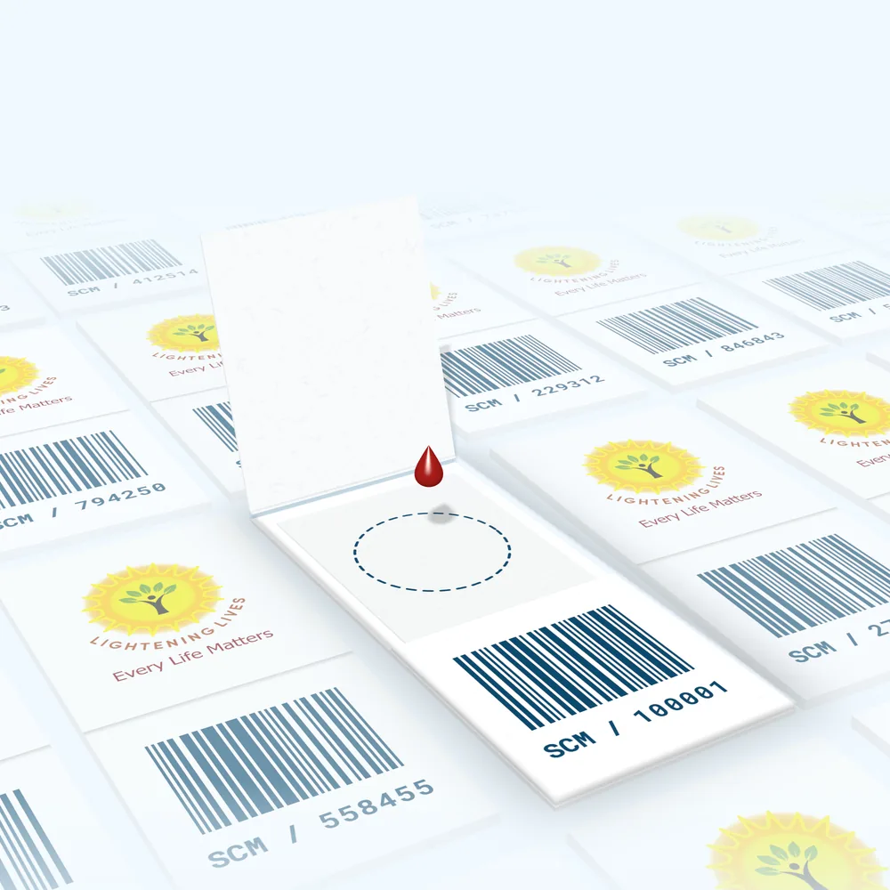
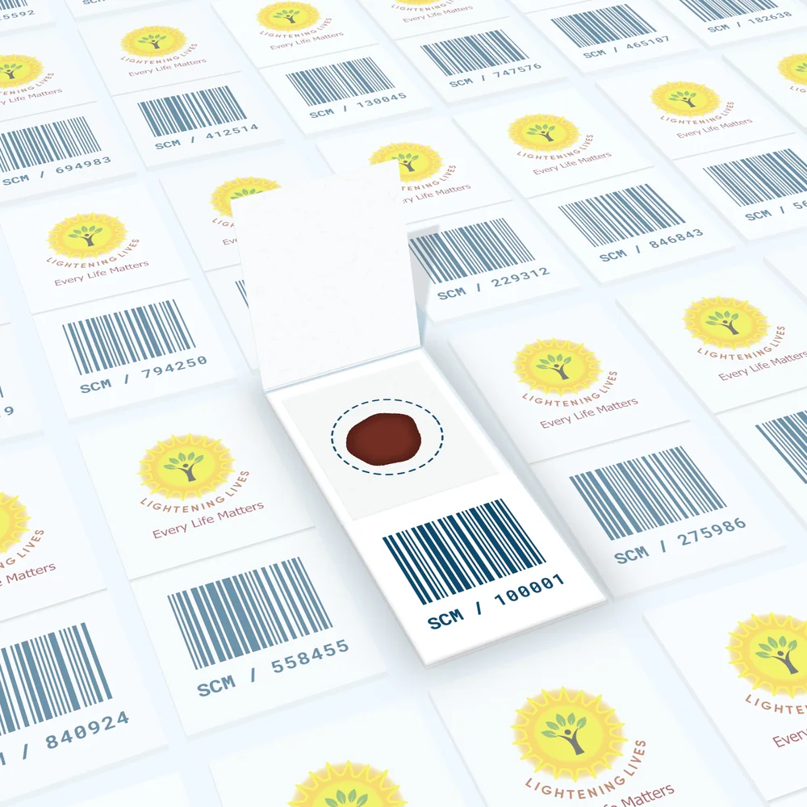
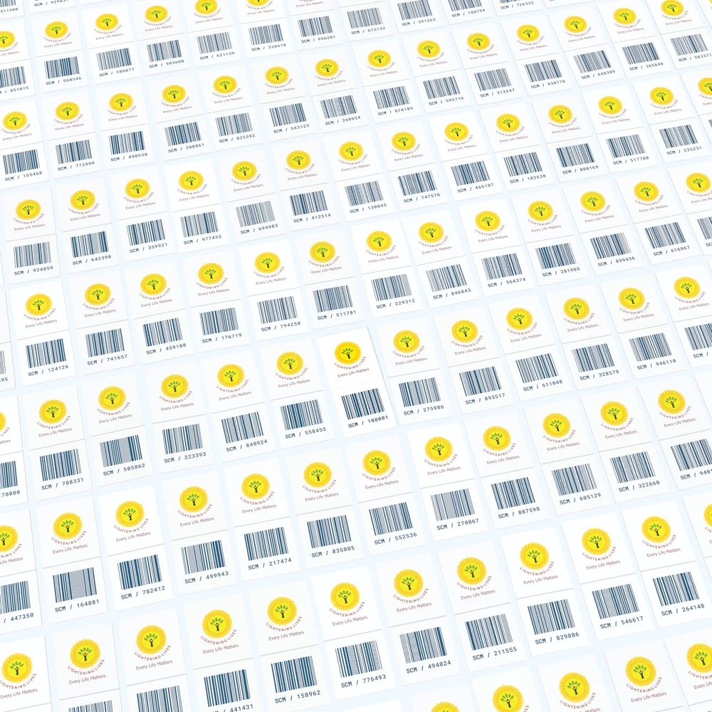
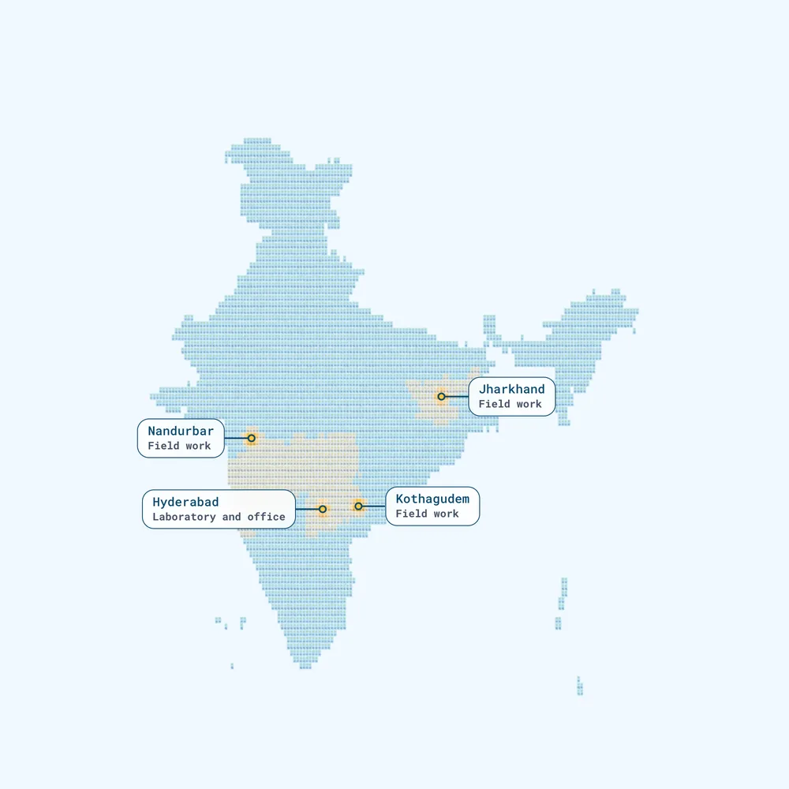
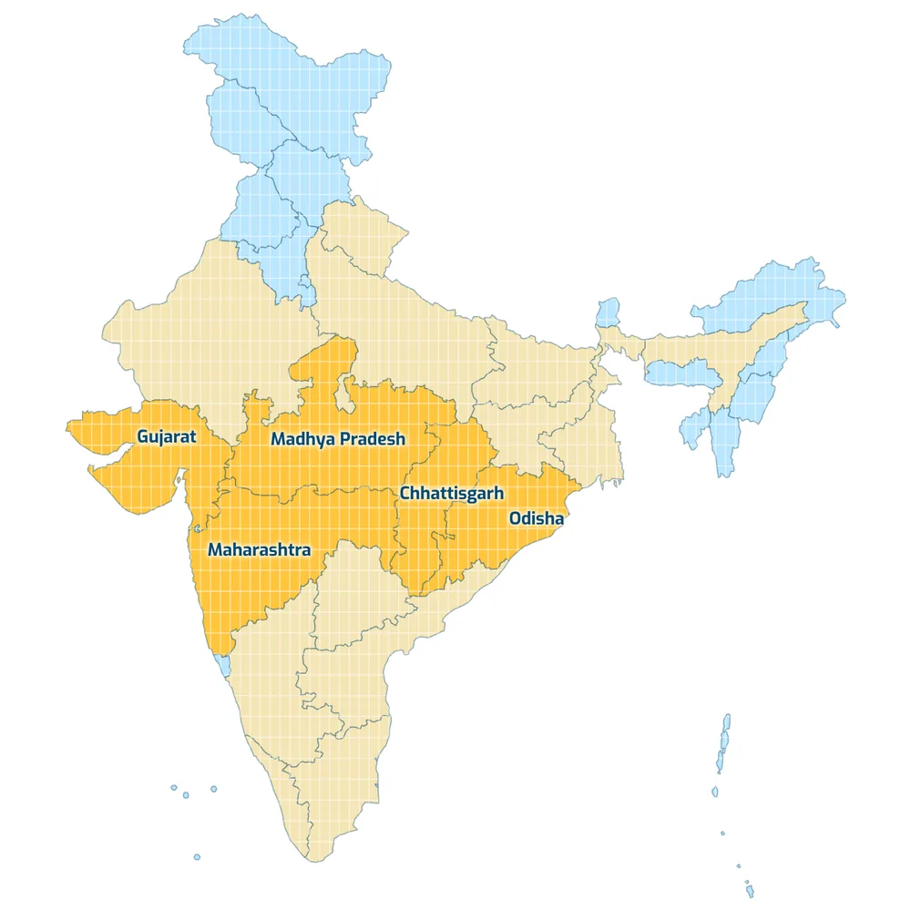
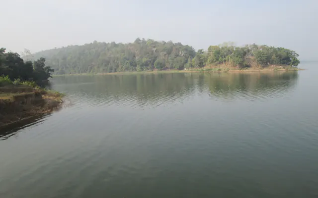

Genetic testing from a single drop of blood.
Lightening Lives is an innovation-driven molecular diagnostics company. We develop affordable, rapid, scalable and extraction-free genetic tests, designed for the scale of a public health programme.
Based in Hyderabad. We supply institutions and programmes only.
From one drop to a national programme
Our tests are simple, affordable and usable outside specialised laboratories, so that molecular diagnosis can reach everyone.
-

One drop
A single drop of blood, dried on a card.
That is the whole sample. Collection is simple and minimally invasive, and our tests are designed so that it doesn't call for specialised training.
-

One batch
From card to result without a DNA extraction step.
Our tests are extraction-free and designed to run with minimal laboratory infrastructure. The workflow is automation-friendly and built for high-throughput screening, so results come back quickly.
-

One programme
Built for screening at the scale of a nation.
We have developed tests for Government of India health programmes, including the National Sickle Cell Anaemia Elimination Mission. Our laboratory is in Hyderabad, and our field work has been in Nandurbar, Kothagudem and Jharkhand.
Molecular diagnostics without the limits of conventional testing
Genetic tests have traditionally needed large equipment, specialised laboratories and trained staff, so they rarely reach the people who need them most. We design ours the other way round.
Genetic diagnosis, made
- Faster
- Simpler
- More affordable
- More accessible
- More scalable
Blood-based testing from a single drop
A dried blood spot on a card. Collection is simple and minimally invasive.
Extraction-free molecular diagnostics*
No separate DNA extraction step.
Rapid turnaround time
Results come back quickly.
Affordable and accessible testing
Affordable for the people tested and for the health system.
Minimal laboratory infrastructure
No large equipment or specialised laboratory needed.
High-throughput screening
For screening many samples at a time.
Automation-friendly workflow
A workflow that can be automated.
Designed for large-scale public health programmes
Including national programmes of the Government of India.
* Where applicable for developed assays.
Our diagnostic portfolio
Four kinds of genetic test, with many more assays under development.
-
Monogenic disorders
Including haemoglobinopathies and musculopathies.
-
Pharmacogenetic variants
For precision medicine and personalised therapy.
-
Rare genetic disorders
Comprehensive testing for rare and inherited conditions.
-
Custom molecular diagnostic assays
For research and clinical applications.
Tests developed so far
These five are all for monogenic disorders. Each began with an institution that needed one, and the next can begin with yours.
-
Sickle cell anaemia
Inherited blood disorder
LitLife™-SCA, our flagship. A simple dried blood spot test, developed for the National Sickle Cell Anaemia Elimination Mission.
About the condition
Sickle cell disease is an inherited blood disorder in which red blood cells become rigid and sickle-shaped, slowing or blocking blood flow and causing pain, anaemia, infections and organ damage. In India it is most common among tribal communities. The Government of India launched the Elimination Mission in July 2023, aiming to eliminate sickle cell disease as a public health problem by 2047.
-
Thalassaemia
Inherited blood disorder
Genetic testing that supports carrier screening, diagnosis and family counselling.
About the condition
Thalassaemia is an inherited blood disorder in which the body makes too little haemoglobin. People with the severe form, thalassaemia major, need regular blood transfusions throughout life. Carriers are usually healthy and often unaware of their status; when both parents are carriers, each pregnancy has a 1 in 4 chance of thalassaemia major.
-
Spinal muscular atrophy (SMA)
Neuromuscular disorder
A test that is adaptable and affordable for large-scale newborn screening, where early detection leads to timely care.
About the condition
SMA is a rare inherited neuromuscular disorder that damages the nerve cells controlling muscles, causing progressive weakness that affects movement and, in severe forms, breathing and swallowing. Treatments now exist and work best when started early, ideally before symptoms appear, which is why newborn screening matters.
-
Duchenne muscular dystrophy (DMD)
Neuromuscular disorder
An earlier genetic diagnosis that allows timely care and lets families find out whether relatives are carriers.
About the condition
DMD is an inherited muscle disorder that mainly affects boys. The body cannot make dystrophin, a protein muscles need, so muscles weaken progressively from early childhood. Diagnosis often comes late; an earlier genetic diagnosis lets families find out whether relatives such as mothers and sisters are carriers.
-
Blood coagulation disorders
Inherited bleeding disorder
Genetic testing that confirms a diagnosis, identifies carriers and supports family counselling and care planning.
About the condition
In inherited bleeding disorders such as haemophilia, blood does not clot properly because a clotting factor is missing or low. Haemophilia A and B mainly affect males; women can be carriers.
-
The condition you need next
Tell us what your programme or laboratory needs to screen for. We develop the test, to the same REASSURED standard as the five above.
Talk to us about a new test
What stands behind the tests
-
Validated by ICMR
LitLife™-SCA, our sickle cell anaemia test, is validated by the Indian Council of Medical Research.
-
Working with CSIR-CCMB
An MOU with the CSIR-Centre for Cellular and Molecular Biology, Hyderabad, covers developing and commercialising the sickle cell assay.
-
Built for national programmes
Tests developed for Government of India health programmes, including the National Sickle Cell Anaemia Elimination Mission.
-
Made by a certified manufacturer
Our tests are produced by a third-party manufacturer that holds a quality certification.
Where the need is, and where we work
Sickle cell disease is most common in a belt across central India, from Gujarat to Odisha.
- The central belt, where it is most common
- Other focus states of the national mission
Point at a state to see what the map says about it.Tap a state to see what the map says about it.
Sources
Sickle cell: Hockham et al., Scientific Reports (2018); National Sickle Cell Anaemia Elimination Mission, Ministry of Health and Family Welfare. Thalassaemia: National Health Mission, Guidelines for Prevention and Control of Hemoglobinopathies in India (2016); Mohanty et al., Journal of Community Genetics (2013); Madan et al., Indian Journal of Human Genetics (2010). Indicative only, shown by state: frequencies differ more between communities than between states.
Map summary. Sickle cell disease is most common in a belt across central India, running from south-eastern Gujarat through Madhya Pradesh, Maharashtra and Chhattisgarh to south-western Odisha. The National Sickle Cell Anaemia Elimination Mission covers 17 focus states: Gujarat, Maharashtra, Rajasthan, Madhya Pradesh, Jharkhand, Chhattisgarh, West Bengal, Odisha, Tamil Nadu, Telangana, Andhra Pradesh, Karnataka, Assam, Uttar Pradesh, Kerala, Bihar and Uttarakhand. Thalassaemia: found across India, where on average 3 to 4 people in 100 are carriers; higher carrier frequencies are reported in Punjab, Delhi, Gujarat, Maharashtra and West Bengal. Where we have worked: Hyderabad (laboratory and corporate office), Nandurbar (Maharashtra), Kothagudem (Telangana) and Jharkhand.

The standard we design to, letter by letter
REASSURED is a published set of nine criteria for diagnostic tests that work in low-resource settings. We develop our tests to meet all nine.
Real-time connectivity
Results can be read or shared digitally with decision-makers.
Ease of specimen collection
Samples are simple and minimally invasive to collect.
Affordable
Affordable for the people tested and for the health system.
Sensitive
Few false negatives.
Specific
Few false positives.
User-friendly
Simple to perform, with minimal training.
Rapid and robust
Quick results; tests survive transport and storage without special conditions.
Equipment-free or simple
No special equipment, or only simple devices.
Deliverable to end-users
Reaches the people who need it most.
SourceLand et al., Nature Microbiology (2019).
We work with institutions
Our tests are supplied in bulk, to institutions and government programmes. Most of that work begins as a collaboration.
-
Hospitals, laboratories and clinicians
Genetic tests for inherited conditions, designed to run with minimal laboratory infrastructure.
-
District health officers and government programmes
Tests developed for national health programmes, for screening at population scale.
-
NGOs and CSR funders
A partner for large, population-level screening requirements.
Looking for a test for yourself or your family? We supply tests to institutions only. Please speak to your doctor or visit your nearest government health facility.
Awareness and counselling, alongside the tests
A result only helps if people understand it. We run awareness and counselling programmes, mostly on behalf of the government.
Awareness programmes explain inherited conditions and screening to communities. Counselling helps people and families understand results and carrier status.
Ask about our programmesWhere our field work has taken us

Our vision
To make precision genetic diagnosis accessible to every individual, through innovative technologies that need only a single drop of blood.
Tell us what your programme needs
Choose where you would like to begin. Each option opens an email to our team.
Write or calladmin@lighteninglives.in+91 91825 88191
Orders are institutional and in bulk. Order details are discussed per request, based on your institutional or regulatory requirements.